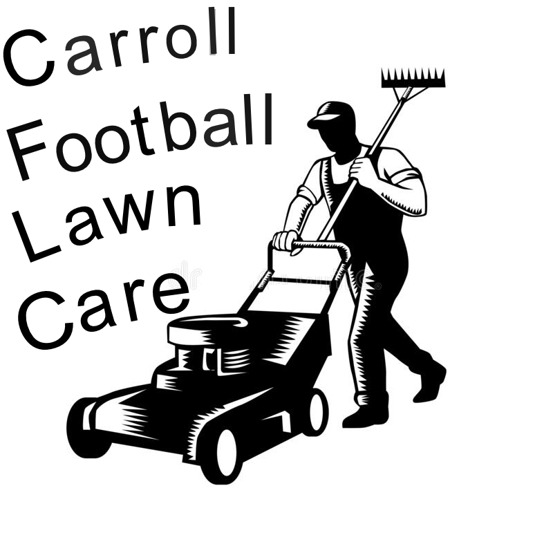

Hello, this is the Carroll Football Lawn Care web page. We welcome you and hope that you find this lawn care service is right for. Here at Carroll Football Lawn care we take true pride and joy in mowing our customers lawns. We don't take mowing lawns as a job, we take it as a life style that has the same priorities as our everyday lives. When mowing lawns we break it down into the finest details and make sure every part is above expectations. We will go above and beyond your regular lawn mowing service and make sure you will be satisfied with our work.